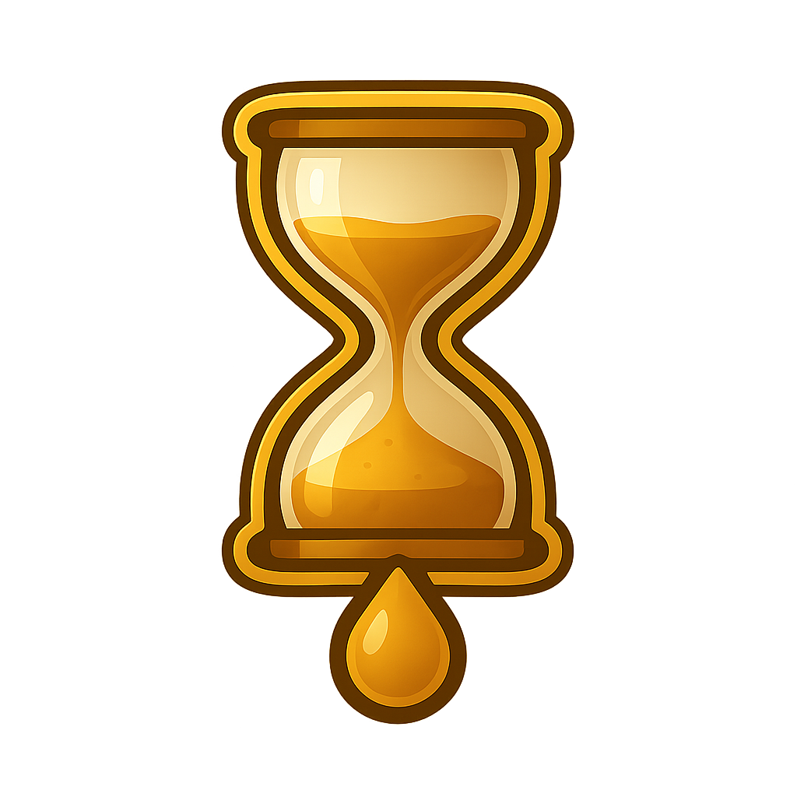

VERSION
0.1.0-alpha
Python/PyQt5 native project; this page is its functional browser adaptation.

ZZX-LABS R&D // SOFTWARE
Precision quartz-cycle timer for concentrate vaporization with configurable heat/cooldown profiles, LED-style cue patterns, thermal calibration presets, and repeatable local timing workflows.
QUARTZ // TIMER // CALIBRATION
Calibration is timing-only and user-defined; it does not estimate a safe inhalation temperature.
VERSION
Python/PyQt5 native project; this page is its functional browser adaptation.
BOUNDARY
Profiles and calibration are user-configured timing aids, not medical or safety guidance.